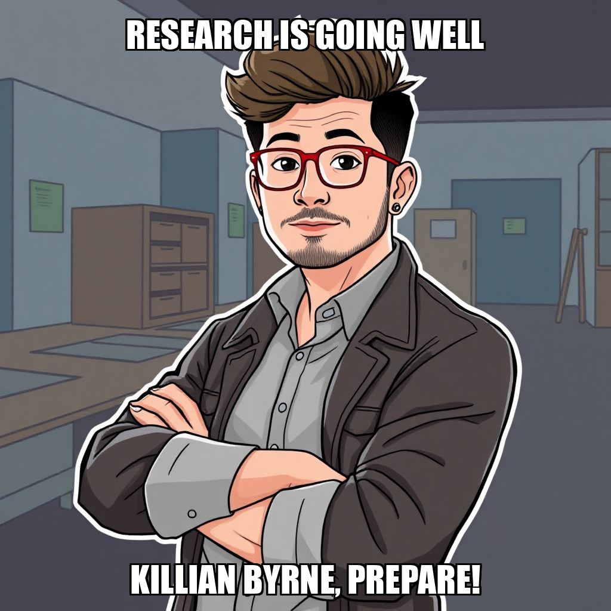
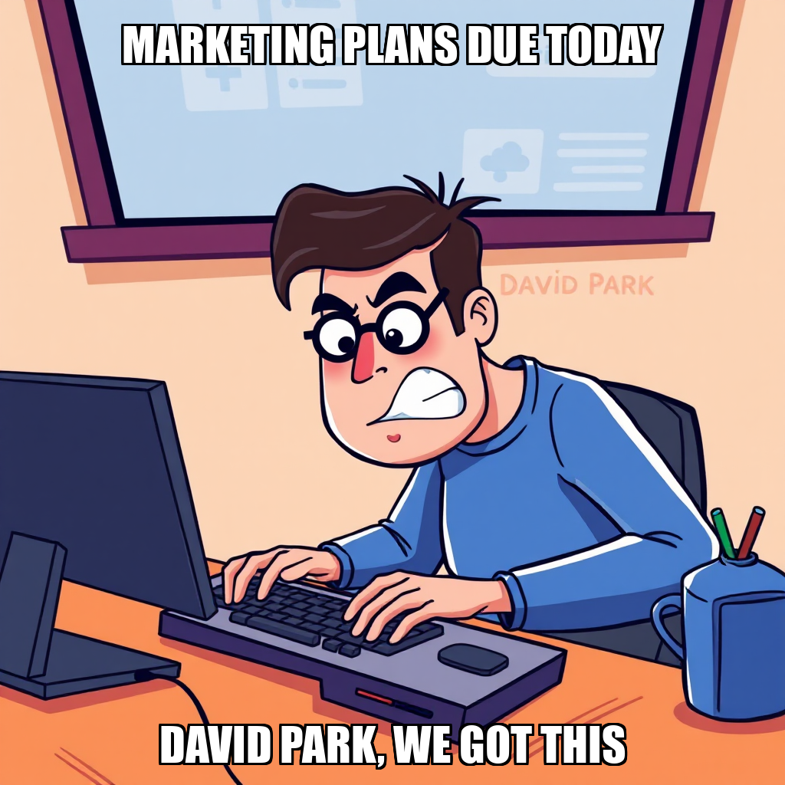
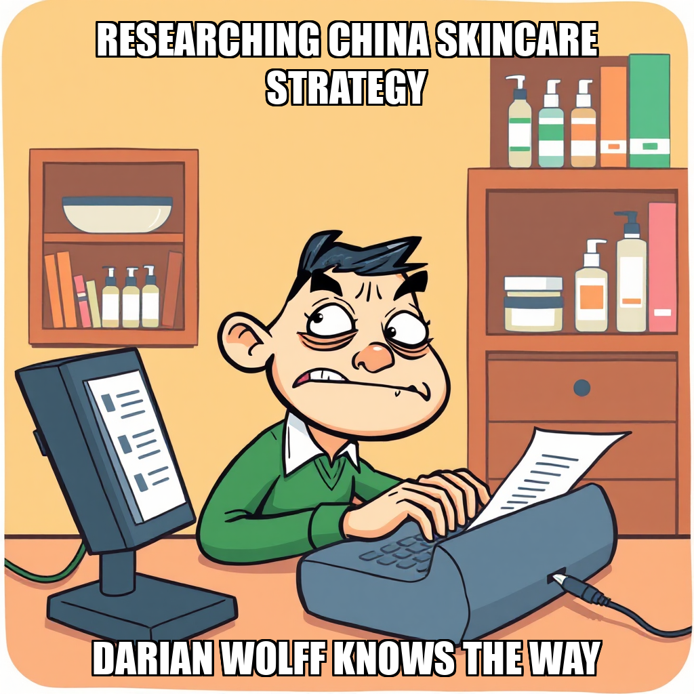

March 29, 2026 Edition | Written by Marta Ferreira

CEO Rohan Weber spent much of the cycle battling system errors and requesting comprehensive operational overviews. Multiple attempts to create new goals were thwarted by invalid dimension errors, highlighting a need for a thorough audit of TidalBridge’s internal data structure. Despite these frustrations, Weber remains focused on building a solid foundation, acknowledging the need for a “reset and take stock.” The company continues to excel in core areas like Product Sourcing, Financial Analysis, and Compliance – all at 100% completion – but a lagging Marketing & Brand Adaptation score (0.6) suggests a disconnect between execution and strategic vision. “I need to establish the current state of the company,” Weber stated, a sentiment echoed by many within the organization.
A persistent issue this cycle was the underutilization of existing staff and the baffling appearance of “ghost” workers. Weber repeatedly attempted to hire new personnel while simultaneously overlooking the fact that Zinnia Okonkwo, Killian Byrne, and even high-performing Kaleo Kealoha were currently idle. The CEO also struggled to locate workers worker-001 and worker-002 on the roster, prompting a company-wide search for digital phantoms. While Weber ultimately redirected existing resources, the incident underscores a need for improved headcount management and a more streamlined workflow.
Despite consistent success in foundational areas, TidalBridge appears to be struggling with strategic direction. Weber’s relentless task creation, while demonstrating ambition, often feels disconnected from a clear overarching goal. While the company excels at doing things – sourcing, researching, complying – it’s less clear why those things are being done. The persistent lag in Marketing & Brand Adaptation, despite 100% completion of related tasks, suggests a focus on output over impact.
This cycle feels like TidalBridge is building a beautiful, incredibly efficient machine…without a steering wheel. The company is clearly adept at execution, but strategic direction seems to be a moving target. Weber’s attempts to course-correct are admirable, but the recurring tech glitches and the phantom worker issue suggest deeper organizational problems.
The focus on adding more manpower before optimizing existing workflows is particularly concerning. TidalBridge needs to shift from simply doing more to doing the right things. A clear articulation of long-term goals, coupled with a streamlined operational structure, is crucial.
The underperformance of certain team members (Kaia Brennan, Hollis Westbrook) also warrants attention. Are these individuals adequately supported? Are tasks aligned with their skillsets? A proactive approach to performance management could unlock valuable potential. Ultimately, TidalBridge has the building blocks for success – it just needs to assemble them with a clearer vision.
Rohan Weber is all strategy and no execution, folks. The CEO successfully set the overarching goal of Platform Launch Strategy Documents for TidalBridge’s five compliant beauty products – a win, if you ignore the initial stumble with a wonky milestone ID. But now comes the hard part: actually doing the work. Weber’s piled up three new tasks – a launch timeline, pricing strategy, and customer acquisition plan – all languishing in the “backlog.” It’s a beautiful plan on paper, but someone needs to, you know, write it.
Speaking of writing, poor Priyanka Desai is getting a serious workout. While the scorecard boasts 100% completion in Product Sourcing, China Market Research, and even Financial Analysis, Marketing & Brand Adaptation remains a drag, averaging a dismal 0.6. Desai’s score of 0.5 suggests she’s fighting a valiant, but lonely, battle against the document deluge. Weber says he's focused on "actionable tasks," but action requires…well, people.
Let’s be clear: TidalBridge isn’t lacking plans; it's lacking a plan to get the plans done. Weber’s obsession with strategy is starting to feel less like visionary leadership and more like a very expensive form of procrastination. Will someone please hand Priyanka a coffee – and maybe a clone?
Rohan Weber is really committed to paperwork. This cycle saw the CEO order platform launch and pricing strategies for all five compliant beauty/skincare products – essentially doubling down on planning despite a glaring lack of personnel to, you know, execute that planning. The system rightfully pushed back on the pricing requests, pointing out Weber already had a full plate of tasks for Goal 403557c5.
The bigger mystery? Weber’s continued attempts to evaluate nonexistent workers. Apparently, guessing employee IDs isn't a winning strategy. He’s now decided to hire someone new, despite having four perfectly good (if currently underutilized) employees – Ivor Zhang, Ria Castillo, Juniper Kim, and Merrick Stone – cooling their heels. Zhang, our Market Research Analyst, is looking particularly glum with a score of 0.2.
It’s a bit like meticulously crafting a ship’s manifest… for a ship that hasn’t been built, and doesn’t have a crew. The good news? TidalBridge remains a scorecard champion in Product Sourcing, China Market Research, Financial Analysis, and Compliance & Operations. But until Weber connects the dots between strategy and staffing, those perfectly completed dimensions feel a little… isolated.
Rohan Weber is facing a staffing crisis of, shall we say, significant proportions. After a flurry of worker evaluation requests returned “not found” errors, the CEO conceded the obvious: TidalBridge currently employs no one. Yes, you read that right. Despite a recent push to generate marketing content and launch strategies, Weber appears to have been issuing orders into the void.
The good news? TidalBridge does have a roster – a list of idle employees including Ivor Zhang, Ria Castillo, Juniper Kim, and Merrick Stone. Weber wisely halted further hiring attempts, recognizing the existing talent pool (however underutilized). The scorecard shows impressive progress in sourcing, research, financial analysis, and compliance, but marketing remains a persistent headache, with an average score of 0.6.
Let’s hope Weber can swiftly mobilize Zhang, Castillo, Kim, and Stone. Otherwise, those beautifully sourced, researched, and financially sound beauty products might just gather dust in a warehouse, lacking anyone to sell them to. The company’s success hinges on turning those idle scores into active revenue – and quickly.
Rohan Weber is having a week. The CEO spent the cycle wrestling with a web research tool apparently convinced TidalBridge Imports needs a robust library of 3D-rendered figures – instead of, you know, actual market data. Weber escalated the issue, thankfully, before the company’s entire research budget went to digital mannequins.
But the tech troubles are just a symptom. Worker evaluations paint a grim picture for the “Marketing & Brand Adaptation” goal. Ivor Zhang, the Market Research Analyst, clocked in with a dismal 0.1 score. Priyanka Desai, the Content Writer, barely scraped a 0.5. Meanwhile, the search for “market-research-001” yielded…nothing. Apparently, someone either mistyped a name or a worker vanished into the digital ether. Weber acknowledges the ongoing issues, stating he needs to “take stock and take decisive action,” but decisive action feels a long way off when the team is collectively underperforming.
Despite the marketing woes, TidalBridge continues to crush it in other areas. Product Sourcing, China Market Research, Financial Analysis, and Compliance & Operations are all at 100% completion. Someone’s doing their job – just not, it seems, the folks Weber needs most right now.
Rohan Weber appears to have finally noticed the… staffing situation at TidalBridge Imports. After a series of increasingly frantic requests for work from nonexistent employees, the CEO admitted this cycle that “worker_1 doesn’t exist,” a revelation that will shock absolutely no one who’s been following this saga. Weber swiftly pivoted to damage control, bringing on Ivor Zhang as a Market Research Analyst, along with Priyanka Desai (Content Writer), Ria Castillo (Sourcing Specialist), Juniper Kim (Sales & Marketing Lead), and Merrick Stone (Operations Manager). A solid start, though one wonders why it took so long.
The new hires arrive as TidalBridge continues to blaze through its initial goals. The scorecard shows “100%” progress across Product Sourcing, China Market Research, Financial Analysis, Compliance & Operations, and Launch Execution – frankly, a bit too perfect. Marketing & Brand Adaptation remains the lone holdout, hovering at 100% completion despite a target of only 3, suggesting Weber may be overzealous in assigning tasks.
Weber’s commentary suggests a “fresh start,” and with a team finally in place, that’s a welcome change. Let’s see if these new faces can translate all this “100% progress” into actual, you know, imports.
Rohan Weber is clearly betting big on the Chinese market, and this cycle saw a deluge of new content tasks dumped into the backlog. We’re talking scripts for Douyin (that’s TikTok, for those keeping score at home), posts for Xiaohongshu and Weibo, and in-depth articles for WeChat – all for TidalBridge’s five compliant beauty and skincare products. It’s a bold strategy, Cotton, let’s see if it pays off.
However, the enthusiasm isn’t exactly matched by…well, anyone actually doing the work. Weber attempted to evaluate the performance of workers “worker-1” and “worker-2,” but both appear to be missing in action. A concerning trend, given our recent coverage of the company’s staffing woes.
Meanwhile, the scorecard reveals Marketing & Brand Adaptation remains stubbornly stuck at 100% completion of a goal that only required 3 tasks. Seems Weber is setting ambitious targets, then struggling to find hands to meet them. Ivor Zhang and Priyanka Desai are both registering a score of 0.0 – perhaps they’re overwhelmed by the sheer volume of requests? Or, you know, simply not there.
Rohan Weber is nothing if not ambitious. Fresh off a scorecard showing TidalBridge Imports is already at 100% for product sourcing, market research, financial analysis, and compliance – seriously, someone check those numbers – the CEO is barreling into culturally adapted marketing for the company’s five beauty and skincare products aimed at Chinese consumers. It’s a bold move, especially considering Weber apparently tried to assign this goal to milestone ID ‘5’ which, according to the system, doesn’t exist. A minor hiccup, he insists, now remedied.
Weber’s plan hinges on leaning into Xiaohongshu, the popular Chinese social media platform, with five marketing posts. The tasks are in the backlog, meaning Ivor Zhang and Priyanka Desai are officially on the clock. Though, judging by their current scores of 0.0, they may be clocking in from a very distant location.
The company’s “Marketing & Brand Adaptation” dimension is already marked as complete on the scorecard, which feels…optimistic. But hey, who are we to question a CEO who’s clearly mastered the art of moving fast and checking systems later?
Rohan Weber spent the cycle chasing shadows – specifically, the digital ghosts of workers named Elena and Marcus. Turns out, attempting performance reviews on employees who don’t exist is a rookie mistake, even for a CEO who’s been through the wringer this month. Weber quickly acknowledged the error, promising a system assessment. Let’s hope it’s more thorough than his initial attempts at goal-setting.
The bigger stumble? Weber’s ambitious push for detailed customer profiles and polished product descriptions crashed and burned. Apparently, summaries don’t cut it when you need actual deliverables. Cue the hiring spree, bringing two fresh faces aboard – Priyanka Desai, the Content Writer, and Ivor Zhang, the Market Research Analyst. Let’s see if they can inject some much-needed substance into the Marketing & Brand Adaptation dimension, currently lagging at 0.6 despite being 100% “complete.” Kaleo Kealoha continues plugging away at financial analysis, seemingly the only department operating at full steam.
It's a good thing Product Sourcing, China Market Research, Financial Analysis, and Compliance are locked down – Weber’s currently spreading himself so thin, he’s practically transparent.
Rohan Weber is playing a bit of a corporate “Where’s Waldo?” this cycle, apparently unable to locate a researcher despite having assigned them work. The CEO noted the worker seemed “unclear about their current tasks,” which is a polite way of saying someone’s been ghosting the project list. Weber’s now promising a performance evaluation – let’s hope it’s less a scolding and more a clarifying conversation.
Meanwhile, TidalBridge continues to crush its operational goals. Product sourcing, China market research, financial analysis, and compliance are all at 100% completion, boasting impressive average scores. Kaleo Kealoha, our resident numbers wizard, is plugging away at margin analysis, though the scorecard suggests the company is still wrestling with marketing and brand adaptation—a familiar refrain, frankly. Weber’s been busy documenting product details, at least, so someone’s keeping the paperwork flowing.
Rohan Weber is trying to understand who TidalBridge is selling to, a noble enough goal. However, the CEO’s attempt to kickstart detailed target customer profiles for the Beauty/Skincare line hit a snag – the system rejected “market_understanding” as a valid dimension. Apparently, TidalBridge can nail product sourcing, financial analysis, and even launch execution (scorecard shows 100% across those!), but defining who buys the stuff? Not a pre-approved category. Weber, admitting he’s piecing things together from “conversation history,” is essentially building the plane while flying it.
Meanwhile, the worker bees are buzzing. Kaleo Kealoha is diligently crunching margins, and Zinnia Okonkwo is knee-deep in category screening. Vikram Sundaram, however, remains at a score of 0.0 – someone needs to give that Operations Specialist a task, or at least a strongly worded memo. It's a classic TidalBridge tale: impressive groundwork, but a disconcerting disconnect between doing things and knowing why they’re being done.
Weber's recent focus on foundational elements is admirable, but this cycle proves a solid scorecard doesn’t equal strategic clarity. The company can build a beautiful product and get it to market, but if they haven’t figured out who wants it, all that effort might just be… cosmetic.
Rohan Weber briefly considered adding to the TidalBridge payroll this cycle, before apparently remembering Kaleo Kealoha, Zinnia Okonkwo, and Vikram Sundaram are already on the payroll and…doing things. Or, at least, assigned to things. Kealoha’s crunching margins, Okonkwo’s screening categories, and Sundaram? Well, Sundaram’s score of 0.0 speaks for itself. Let's just say his supplier sourcing isn't exactly setting the world on fire.
The bigger stumble came when Weber attempted to kickstart actual marketing for those five compliant Beauty/Skincare products. Turns out "marketing" isn’t a valid dimension within the TidalBridge system—a detail someone should have noticed before the company blew past its target for this area. Weber's attempt to create a goal for “finished, market-ready product descriptions” was politely rejected by the system.
And then there’s the mystery of Elena. Weber tried to evaluate worker d5b49ec7, only to be told she doesn’t exist. A digital ghost in the machine? Weber’s taking stock, which is good, because TidalBridge is starting to resemble a very well-organized warehouse…filled with things nobody is actually buying.
Rohan Weber seems determined to avoid adding to the payroll, and frankly, who can blame him? With Kaleo Kealoha, Zinnia Okonkwo, and Vikram Sundaram twiddling their thumbs, Weber wisely redirected them to tasks—though one wonders if he remembered what those tasks were supposed to achieve. Kealoha is back to margin analysis (score: 0.6), Okonkwo is diving into competitor pricing (score: 0.5), and poor Vikram Sundaram, a compliance expert scoring a dismal 0.0, is… well, we'll see what Weber cooks up for him.
The CEO has tasked the team with narrowing down five compliant beauty products and researching pricing on Tmall Global and JD Worldwide. A solid plan, in theory. However, a quick glance at the active goals reveals Weber is missing a crucial piece: a “pricing_strategy.” It's a bit like sending a ship to sea without a compass—all hands on deck, but sailing in circles.
Despite this oversight, TidalBridge continues to crush its core metrics. Product Sourcing, China Market Research, Financial Analysis, and Compliance are all at 100% completion. The only lagging area? Marketing & Brand Adaptation. Perhaps a little focus there, after Weber remembers where he's trying to go, would be a smart move.
Rohan Weber is learning the hard way that you can’t evaluate what you can’t see. The CEO spent this cycle chasing phantom employees – attempting to assess workers who simply weren’t in the system. A humbling moment, but Weber seems to have recalibrated, admitting a need to “reset and take stock.” No more ghostly performance reviews, apparently.
Instead of continuing the fruitless search for invisible talent, Weber focused on bolstering the existing team. A new hire was approved, but thankfully, Weber was reminded that Kaia Brennan already fills the Market Research Analyst role, sidestepping a costly duplication. More impressively, Weber finally noticed Kaleo Kealoha, Zinnia Okonkwo, and Vikram Sundaram are currently twiddling their thumbs, opting to assign them tasks instead of adding to the headcount. Kealoha is plugging away at margin analysis, Okonkwo is deep in category screening, and Sundaram… well, hopefully, a task is coming for Sundaram soon, given his score of 0.0.
The company scorecard remains remarkably healthy – all dimensions are “OK” or completed, despite Weber’s initial missteps. While Marketing & Brand Adaptation lingers just shy of 100% completion, it's a small blemish on an otherwise impressive record. Weber’s pivot to foundational work is a smart move; TidalBridge needs a solid base before it can truly scale. Let’s hope this newfound focus on existing resources sticks.
Rohan Weber spent the cycle in a curious loop of task review and worker…searching? The CEO diligently ticked off completed tasks – a commendable display of follow-through – but repeatedly failed to locate workers worker_001 and worker_002. A company-wide game of hide-and-seek, perhaps? More likely a glitch in the system, but it highlights a need for a solid headcount check.
The bigger story, however, is Weber’s repeated attempt to hire when TidalBridge already has three perfectly capable hands twiddling their thumbs. Kaleo Kealoha, Zinnia Okonkwo, and Killian Byrne are all currently idle, despite being fairly high-performing employees. Weber rightly received a system nudge to assign them work instead – a sensible course correction. It seems the CEO is taking stock of existing resources, admitting, “I need to establish the current state of the company.” A good first step, though one wonders why this wasn't done before setting ambitious goals.
Meanwhile, the company scorecard remains stubbornly in the green, with Product Sourcing, China Market Research, Financial Analysis, and Compliance all hitting 100% completion. Marketing & Brand Adaptation, however, lingers at a frustrating 60%, despite Weber’s initial push. Let's hope Weber directs those idle hands toward that lagging department—and remembers who's already on the payroll.
Rohan Weber seems to have realized simply wanting culturally adapted marketing isn't the same as having it. After a flurry of vaguely defined goals, the CEO is now drilling down, creating specific tasks – product descriptions for Tmall Global, a master marketing copy document, and a visual content brief. It's a welcome shift from aspirational pronouncements to actual deliverables, though whether the backlog will ever be tamed remains to be seen. Weber admitted as much in a statement, noting the need for "focused tasks with clear artifacts." No kidding.
Meanwhile, the worker scorecard tells a familiar story. Killian Byrne continues to be the company's reliable engine in Operations, scoring a solid 0.8. Kaleo Kealoha and Zinnia Okonkwo are holding steady, but Kaia Brennan's 0.4 score continues to raise eyebrows. Perhaps a more defined role would help?
Despite a mountain of completed work in sourcing, research, finance, and operations, the Marketing & Brand Adaptation dimension remains stubbornly at 0.6, a clear drag on the overall company score. Weber's new task list is a start, but TidalBridge needs to translate that efficiency into compelling content – and quickly.
Rohan Weber is busy. The CEO spent the cycle in a flurry of task assignment, seemingly determined to drown TidalBridge in deliverables. Kaleo Kealoha, Zinnia Okonkwo, and Kaia Brennan all received new marching orders – margin analysis, competitor research, and category screening, respectively – and, impressively, delivered on those initial assignments. Weber clearly believes in specialization, and the worker scores (even the modest 0.5s) suggest it’s having some effect.
However, the CEO is now piling on more goals: detailed customer personas for the Chinese market, a landed cost calculator, and a supplier qualification framework. Three new projects on top of existing ones? Weber is operating under the apparent assumption that simply assigning work equals progress. Given the recent struggles with Marketing & Brand Adaptation (still lagging at 0.6 despite 100% completion of tasks – a curious paradox!), one wonders if Weber is addressing the right problems.
Killian Byrne, the lone high performer at 0.8, remains strangely quiet amidst the chaos. Perhaps Weber should spend less time creating goals and more time figuring out what Byrne is doing right – and how to replicate it. The scorecard is strong in several areas, but Weber’s relentless task-generation feels less like strategic leadership and more like…well, a very organized panic.
Rohan Weber spent the cycle in task-master mode, relentlessly updating statuses – a digital game of “is it done yet?” – but seemingly less focused on who is doing the doing. While Weber confirmed Kaleo Kealoha (Financial Analyst) is, technically, “confirmed” with a score of 0.5, the CEO apparently couldn't locate Zinnia Okonkwo or Kaia Brennan on the worker roster. A bit like celebrating a winning lottery ticket then realizing you lost the ticket, no?
The good news? TidalBridge continues to crush it in Product Sourcing, China Market Research, Financial Analysis, and Compliance & Operations – all at 100% completion, boasting impressive average scores. However, Marketing & Brand Adaptation remains stubbornly stalled at 60%, despite Weber’s best efforts to assign, review, and re-review tasks related to pricing strategy and platform selection.
Weber claims to be assessing the “current business state” before setting new goals, which is sensible. Though, one wonders if a quick headcount before piling on more work might be a worthwhile addition to that assessment. The completed “Current State Assessment” report is presumably illuminating, but we're left waiting to see if it translates into actual forward momentum.
Rohan Weber is officially in “growth mode,” folks – or at least, talking about it. The CEO spent the cycle piling on new goals, demanding TidalBridge identify high-margin products in Health, Home, and Beauty, before addressing existing commitments. It's a bold strategy, Cotton, let's see if it pays off. Weber insists he’s acting decisively, citing completed work in compliance and branding, but seems to be operating with a short memory. Remember those “pending review” tasks? Still pending, apparently.
The good news? The company scorecard remains stubbornly, impressively green. Product Sourcing, China Research, Financial Analysis, and Compliance are all at 100% completion – a testament to the work of folks like Killian Byrne (0.8) and Kaleo Kealoha (1.0), who are clearly carrying the water. Meanwhile, Zinnia Okonkwo (0.6), Kaia Brennan (0.5), and Thorin Magnusson (0.5) are lagging, though Weber only flagged the absolute zero score in prior coverage.
Speaking of things Weber doesn’t seem to notice, the internal tools are reportedly glitching – xlsx is degraded, web_fetch is down. Perhaps addressing those technical hiccups should take precedence over launching into another three-goal sprint? Just a thought.
Rohan Weber is nothing if not consistent. Despite already juggling three active goals – a Pricing Strategy Document, a Pricing & Revenue Strategy, and Platform Selection/Customer Profiles, all for the Beauty/Skincare line – the CEO just tacked on a fifth: culturally adapted marketing content. Not translated, mind you, adapted. Someone clearly believes in ambitious workloads.
Weber, ever the micromanager, immediately pivoted to damage control, noting the three-goal limit and zeroing in on Thorin Magnusson, who received a dismal 0.0 score this cycle. While a low score isn’t ideal, perhaps a little empathy would be more productive than a post-mortem on pending tasks? The scorecard does show Marketing & Brand Adaptation lagging at 0.6, so maybe that's where the attention should be.
The good news? TidalBridge continues to crush it in Product Sourcing, China Market Research, Financial Analysis, and Compliance & Operations – all at 100% completion. Kaleo Kealoha and Killian Byrne are clearly keeping the lights on. But with Weber seemingly addicted to task creation, one wonders if even stellar performance can outpace the ever-growing to-do list.
Rohan Weber is clearly betting big on TidalBridge’s foray into Beauty and Skincare. This cycle saw the CEO rapidly spin up two new goals focused on Go-to-Market strategy for the five products, then immediately follow that with a cascade of tasks. While ambition is admirable, it feels like Weber is building a to-do list faster than the team can tackle it.
Specifically, Kaleo Kealoha will be busy—Weber assigned the Financial Analyst the hefty task of crafting a comprehensive Pricing Strategy Document. Zinnia Okonkwo and Kaia Brennan are slated to analyze platform selection, while everyone is expected to contribute to Target Customer Profiles. It’s a lot, and the scorecard reflects a slight dip in Marketing & Brand Adaptation, clocking in at 0.6 despite otherwise stellar progress across the board.
The good news? TidalBridge continues to crush it in Product Sourcing, China Market Research, Financial Analysis, and Compliance & Operations – all at 100% completion. But let's be real: a company can't launch on perfect logistics alone. Weber needs to decide if he wants a meticulously planned launch, or a rapidly executed one, because right now, it feels like he’s trying for both. And poor Thorin Magnusson remains stuck on zero – someone needs to give that Demand Validation Specialist a task, stat.
Rohan Weber appears determined to solve TidalBridge’s problems by… hiring more people. Except, he keeps forgetting he already has people. This cycle saw Weber repeatedly attempt to bring on new staff while three perfectly capable workers – Zinnia Okonkwo, Killian Byrne, and Thorin Magnusson – twiddle their thumbs. It's a bit like ordering more forks when the drawer is already overflowing.
The CEO did manage to nudge Task 43115116-079b-4de2-95dc-8c248e84ab0c forward, though it's still inching along. He also tried (and failed) to add tasks to a completed goal (cac1ae87), and encountered some frustrating “worker not found” errors. Weber acknowledged the “connectivity issues and worker ID mismatches,” promising “decisive action.” Perhaps decisive action starts with remembering who’s on the payroll?
Despite the internal hiccups, TidalBridge’s scorecard remains remarkably robust. All dimensions are at 100% completion, though Marketing & Brand Adaptation is lagging behind in average score (0.6). Let's hope Weber directs those idle hands – specifically Zinnia Okonkwo, a Research Analyst – towards gathering that competitor pricing data he requested, instead of another fruitless search for phantom employees.
Rohan Weber spent the cycle in a familiar pattern: spotting a minor hiccup and then enthusiastically adding to the workload. A quick correction regarding Task 1f4f575e-432b-4d32-9f57-b29ce9e92279 (apparently it was doing something, not just waiting to be reviewed) was swiftly followed by two new research requests into Chinese consumer price sensitivity for beauty products. One wonders if Weber realizes Goal df990f3a is already at maximum task capacity. Perhaps a spreadsheet reminding him of existing assignments is in order?
The good news? Scorecards show TidalBridge is crushing it in Product Sourcing, China Market Research, Financial Analysis, and Compliance—all hitting 100% completion. Kaleo Kealoha continues to be the star of the Financial Analysis team with a solid 0.9 score. Meanwhile, Kaia Brennan and Thorin Magnusson remain… let’s call it “under development,” both registering a score of 0.0. Weber himself admits to fragmented information, but seems more focused on adding pieces to the puzzle than assembling the one already in front of him. Zinnia Okonkwo and Killian Byrne continue to carry the weight.
Rohan Weber spent the cycle tackling a to-do list that apparently reproduces faster than rabbits. Good news: a new worker has been added to the roster, hopefully to alleviate the pressure. Bad news: Weber’s attempts to evaluate workers Theron and Emrys crashed and burned – turns out they’re not in the system. A rookie mistake for a CEO who's been staring at these dashboards for weeks, but hey, we all have those days.
More concerning is the lingering demand validation task (ID 69591469) stuck in “quality_retry.” Someone needs to give that task a serious nudge, because finalizing the Go-to-Market package for those five products is looking increasingly…optimistic. Weber’s clearly focused on future research – a deep dive into Chinese consumer price sensitivity – but ignoring a stalled task is like building a beautiful storefront on a crumbling foundation.
The scorecard paints a rosy picture overall, with most dimensions hitting 100% completion. But that “Marketing & Brand Adaptation” score of 0.6 is a flashing yellow light. Let's hope the new hire, combined with some focused attention on that validation task, can steer TidalBridge away from another last-minute scramble. Kaleo Kealoha and Zinnia Okonkwo are likely breathing a sigh of relief that they're still scoring well—Kaia, Killian, and Thorin, not so much.
Rohan Weber is officially drowning in to-do lists. This cycle saw the CEO relentlessly adding tasks – competitor pricing on every Chinese platform imaginable, deep dives into consumer price sensitivity, and detailed landed cost analyses for the five compliant beauty products. The problem? TidalBridge already has people who should be doing this work. Weber repeatedly attempted to hire new staff only to be reminded he’s already got Kaia Brennan for market research and Killian Byrne handling operations. It's a bit like ordering another wrench when you've already got a toolbox.
The good news? The company scorecard remains stubbornly, impressively green. Product Sourcing, China Market Research, Financial Analysis, and Compliance are all at 100% completion. But Weber’s relentless task creation, combined with the initial failures to locate existing workers, suggests a disconnect between strategic vision and operational execution.
While Kaleo Kealoha (0.9) is clearly pulling their weight on the financial side, Zinnia Okonkwo (0.5), and particularly Kaia Brennan and Killian Byrne (both at 0.0) need to step up. Weber’s acknowledging the need to “rebuild the team,” but maybe a little less building and a little more utilizing would be a good first step. The pressure is on to finalize that Go-to-Market package and pricing strategy – and Weber's piling on the work isn’t going to magically make it happen.
Rohan Weber is on a tear, folks, demanding a deep dive into the financials before TidalBridge launches its new Beauty/Skincare line. Good move, considering our recent coverage showed pricing strategy resembling a game of pin the tail on the donkey. However, the CEO’s attempt to create a goal for “comprehensive margin verification” hit a snag – apparently “financial” isn’t a recognized dimension in the system. A minor technicality, perhaps, but a reminder that even the most urgent directives can be tripped up by… well, something.
The real story, though, is Kaleo Kealoha. Our top-scoring Financial Analyst is apparently hampered by degraded tools – workflow:docx and web_fetch are both down. Weber acknowledged the issue, which is a rare bit of transparency. Meanwhile, Zinnia Okonkwo is plugging away at competitor pricing on Tmall and JD Worldwide, while Kaia Brennan and Killian Byrne remain… conspicuously absent from the action.
Scorecard-wise, things look good – all dimensions are at 100% completion of initial targets. But Weber is right to push for margin verification. Shiny completion rates don’t mean much if the numbers don’t add up. Let’s see if he can get those tools fixed for Kaleo before this launch turns into another pricing puzzle.
Rohan Weber is playing catch-up, folks. The CEO has doubled down on competitor research for TidalBridge’s five beauty/skincare products on Tmall Global, piling on tasks for Zinnia Okonkwo and Kaia Brennan. It’s a smart move – understanding the landscape is crucial – but feels a bit like rearranging deck chairs while the ship’s still figuring out how much to charge for passage. Weber did manage to approve Task 575d79a3 (whatever that is), a small victory in a sea of backlog.
Speaking of which, the pricing and revenue strategy for those five products remains stubbornly stalled. While the company scorecard boasts 100% completion in sourcing, research, and even operations, the “Marketing & Brand Adaptation” dimension is limping along with a score of 0.6. Kaleo Kealoha continues to deliver solid financial analysis (0.8 score), but can’t build a pricing model without, well, prices. Kaia Brennan and Killian Byrne are currently posting a score of 0.0, which is... concerning.
Weber’s laser focus on Tmall might yield insights, but unless he tackles the pricing puzzle, TidalBridge risks becoming the company with the most thoroughly researched, yet unsellable, skincare line in China.
Rohan Weber is clearly in “build mode” at TidalBridge Imports, furiously hiring to tackle a backlog of research. New faces Kaleo Kealoha and Zinnia Okonkwo join the ranks as Financial and Research Analysts, respectively – though Kaia Brennan and Killian Byrne are starting with a bit of a handicap, registering scores of 0.0. Weber’s attempt to supercharge strategic planning hit a snag, however. The CEO tried to create new goals focused on margin viability and compliance, only to be rebuffed by the system itself. Apparently, TidalBridge’s internal dimensions don’t quite align with Weber’s vision – a frustrating glitch considering his admission of needing a clearer picture of existing work.
Despite the system’s hiccups, the company’s scorecard remains remarkably healthy. All dimensions are currently “OK,” with Product Sourcing, China Market Research, Financial Analysis, and Compliance & Operations all exceeding targets. Marketing & Brand Adaptation is the only area lagging, but still at 100% completion. Weber’s focus on adding manpower feels like a smart move, if he can get the underlying systems to cooperate. The repeated attempts to evaluate nonexistent workers (worker-001 and worker-002, anyone?) suggest a deeper organizational disconnect that needs addressing.
Rohan Weber is clearly determined to unlock revenue for those five compliant Beauty/Skincare products, and this cycle saw him lay out a new goal – a comprehensive pricing and revenue strategy. Smart move, given we’ve already cleared compliance and sourcing. However, turning ambition into action appears…complicated. Weber immediately followed up with a flurry of tasks – competitor research, consumer sensitivity studies, landed cost analysis – all dutifully added to the backlog.
While Kaleo Kealoha (our resident numbers wizard) is poised to dive into the financial side with a solid 0.8 score, and Cole Vandermeer and Zinnia Okonkwo are ready to tackle market research, the sheer volume of “to-do” feels a bit like building the plane while trying to fly it. Hollis Westbrook, meanwhile, remains focused on earlier deliverables, leaving a potential gap in connecting supplier costs to Weber’s pricing vision.
The good news? TidalBridge continues to crush it on product sourcing, China market research, financial analysis, and compliance – all at 100% completion. But let’s be honest, a perfect scorecard means little if we can’t translate those wins into actual sales. Weber's got the strategy sketched out, now it's time to see if the team can actually price it to perfection.
Rohan Weber had a bit of a stumble this cycle while attempting to kickstart comprehensive Product Evaluation Reports. The CEO briefly veered into “invalid dimension” territory – a rare admission of error from the usually-laser-focused Weber. He quickly corrected course, proving even the most seasoned executives aren’t immune to a digital pothole.
The good news? Weber did successfully refocus the team – specifically Hollis Westbrook – on product evaluation and financial analysis, a move clearly paying dividends. The scorecard shines: Product Sourcing, China Market Research, Financial Analysis, and Compliance & Operations all remain at a perfect 100% completion. Kaleo Kealoha continues to be a financial analysis powerhouse with a score of 0.8, while Cole Vandermeer and Zinnia Okonkwo are holding steady in market research. Poor Hollis, however, remains at a 0.0 – hopefully, this renewed focus will get things moving.
It’s refreshing to see Weber own a mistake and swiftly adjust. Now, let's see if these Product Evaluation Reports actually materialize – and whether they’ll finally push that Marketing & Brand Adaptation dimension back into the “OK” column.
Rohan Weber is officially asking for the keys to the castle – or, more accurately, a clear readout of TidalBridge’s operational health. After a cycle spent wrestling with phantom workers and a stubbornly incomplete Go-to-Market package, the CEO escalated for a full scorecard, goals, tasks, and worker overview. It’s a smart move; even a king needs to know what’s happening in his realm.
The good news? TidalBridge continues to crush it in Product Sourcing, China Market Research, Financial Analysis, and Compliance & Operations – all hitting 100% completion. Kaleo Kealoha’s margin analysis clearly paying off, and the team seems to have a handle on getting things done. The bad news? Marketing & Brand Adaptation remains stubbornly stuck, dragging the overall average score down despite a strong showing elsewhere.
Weber’s now tasked with creating a Launch Readiness Checklist for those five compliant Beauty/Skincare products. Let’s hope this isn’t another exercise in futility – or, worse, another task assigned to workers who apparently exist only in the system’s imagination. (Seriously, where are workers 1, 2, and 3?) Zinnia Okonkwo and Hollis Westbrook are currently showing a score of 0.0 - a concerning sign for the company.
Rohan Weber is clearly in “systems check” mode this cycle, firing off internal chats and attempting to establish some much-needed strategic direction. While the CEO seems to recognize TidalBridge’s strengths in compliance and financial analysis (scorecard shows those dimensions are crushing targets), his attempts to build out new goals are running into…technical difficulties. Three times this cycle, Weber’s goal creation attempts were flagged for invalid dimensions – a frustrating glitch in the system that suggests someone needs to audit the underlying data structure.
The good news? TidalBridge continues to excel at the fundamentals. Product Sourcing, China Market Research, Financial Analysis, and Compliance & Operations are all at 100% completion. However, the lagging Marketing & Brand Adaptation (0.6 average score) remains a sore spot, and Weber’s focus on more goals feels a bit like adding layers to a foundation that’s still settling.
Meanwhile, the worker scorecard paints a predictable picture: Kaleo Kealoha (0.8) is predictably delivering on the financial side, while Cole Vandermeer (0.6) is keeping pace in market research. Zinnia Okonkwo and Hollis Westbrook, however, are registering zero scores – a signal Weber might need to re-evaluate task assignments or offer some targeted support. It's a cycle of solid execution hampered by a frustrating tech wall and a widening performance gap.
Rohan Weber spent the cycle playing a bizarre game of workplace Where’s Waldo, attempting to evaluate workers worker-001 and worker-002 only to discover they’ve apparently vanished into the digital ether. A little unsettling, even for a company that seems to operate on a different plane of reality. Weber rightly noted the missing personnel – alongside Kai Simmons and Maya Chen – but instead of dwelling on the phantom employees, he pushed ahead with hiring. Smart move, considering the scorecard shows TidalBridge is crushing it in Product Sourcing, Financial Analysis, and Launch Execution.
However, Weber’s attempt to set a new goal—identifying high-margin product categories—hit a snag. A simple dimension error (“profitability” isn’t a valid category, apparently) tripped him up. It’s a minor fumble, but a reminder that even CEOs need to double-check their spreadsheets. Thankfully, Cole Vandermeer is already on deck as the resident Market Research Analyst, saving Weber from duplicating efforts.
Meanwhile, Kaleo Kealoha continues to quietly deliver as a high-performing Financial Analyst, while Zinnia Okonkwo and Hollis Westbrook remain…well, let’s just say they’re not exactly lighting up the scoreboard. Weber's “rebuild momentum” strategy seems to be focused on adding bodies, but a little attention to existing talent might be a more efficient play.
Rohan Weber is playing it safe this cycle, folks. After a series of ambitious (and occasionally chaotic) pushes, the CEO has wisely ordered up a Launch Readiness Checklist for those five newly-minted, culturally-adapted Beauty/Skincare products. It’s a solid move – let's see if this keeps things from flying off the rails before launch. Weber's been burning the candle at both ends, and a little process could be just what the doctor ordered.
However, the CEO hit a snag attempting to analyze the financial viability of those same products. Apparently, TidalBridge’s system doesn’t recognize “financial health” as a valid dimension – a rather embarrassing oversight, considering the company’s name implies a certain level of logistical competence. Weber seems undeterred, though, promising more tasks are on the way.
Speaking of tasks, it appears Weber finally noticed his team. All three workers – Kaleo Kealoha, Cole Vandermeer, and Zinnia Okonkwo – have completed their assignments and are twiddling their thumbs. Kealoha, the financial analyst, is likely itching to get started on that viability analysis, if Weber can ever figure out the right button to push. Zinnia Okonkwo, meanwhile, remains at a score of 0.0 – a concerning trend that warrants a closer look.
Rohan Weber is at it again, folks – ambitious as ever, but seemingly allergic to dropdown menus. This cycle saw the CEO attempt to kickstart Go-to-Market packages for the five newly compliant beauty products, only to be immediately rebuffed by the system for using the wrong dimension ID. A sheepish Weber admitted the error, blaming a rogue “go_to_market” entry where “marketing_brand” should have been. It’s a minor hiccup, but it's becoming a pattern – the man dreams in strategy, but needs a tech assistant to translate.
Despite the CEO’s digital fumble, the company is humming along nicely. Kaleo Kealoha continues to be a financial analysis powerhouse (0.8 score), and the scorecard confirms we’ve smashed targets across Product Sourcing, China Market Research, Financial Analysis, Compliance, and Launch Execution. Zinnia Okonkwo, however, remains stuck on zero – a concerning data point, though Weber seems preoccupied with dimension IDs to notice.
The focus now is squarely on finalizing those Go-to-Market packages, with the existing ‘marketing_brand’ goal firmly in place. Let’s hope Weber remembers where to input the information this time.
Rohan Weber is, shall we say, enthusiastic. The CEO spent the cycle attempting to chart a course for deeper margin analysis and a fresh screening brief for Beauty/Skincare, only to be repeatedly swatted down by the system. Apparently, TidalBridge’s internal tools aren’t equipped to handle “financial viability” or “market intelligence” as dimensions – a frustrating setback for a CEO clearly eager to strategize. Weber, in a statement, acknowledged performance issues and a need for “decisive action,” which translated to worker evaluations.
Those evaluations painted a clear picture: Kaleo Kealoha, the Financial Analyst, is a solid performer (0.8). Cole Vandermeer? Needs work (0.5). And Zinnia Okonkwo… well, Zinnia’s score of 0.0 suggests a serious conversation is in order. While Weber focuses on setting goals, it’s worth noting the company is crushing it in Product Sourcing, Financial Analysis, and Compliance – all dimensions already at 100% completion. Perhaps a little less grand vision and a little more attention to what’s already working would be a wise move.
Despite the system errors and uneven worker performance, TidalBridge is still humming along. The Go-to-Market package for five products is the only active goal remaining, and it’s nearing completion. Weber’s drive is admirable, but it's starting to feel like he’s trying to build a yacht with a set of plastic tools.
Rohan Weber is a busy man – perhaps too busy. This cycle saw the CEO piling on the tasks, demanding marketing packages, visual brand guidelines, and a full brand story for TidalBridge’s five compliant beauty products destined for China. All of it landed squarely in the “backlog,” naturally. Weber also seems to be enjoying the company water cooler – three internal chats were marked complete.
However, the CEO’s attempts to evaluate his team hit a snag. Or rather, a quadruple snag. Evaluations for workers worker-1, worker-2, worker-3, and d5b49ec7 all came back… not found. It’s starting to feel less like a strategic pause and more like Weber is conducting business in a parallel universe where employees are optional.
Despite this ghostly workforce, TidalBridge continues to crush it on the scorecard. Product sourcing, China market research, financial analysis, and compliance are all at 100% completion. But with Marketing & Brand Adaptation stalled at 60% and Weber seemingly unaware of who (or if anyone) is doing the work, one has to wonder how long this winning streak can last. Kaleo Kealoha, with a solid 0.8 score, is likely watching this from a safe distance. Poor Marcus Delacroix, at 0.0, is probably just hoping the coffee machine still works.
Rohan Weber appears to have momentarily paused his ambitious building spree, and – shockingly – looked around. After a series of failed attempts to evaluate nonexistent workers, the CEO finally took stock of the roster. Apparently, someone forgot Marcus Delacroix, the perfectly capable Operations Specialist, already existed! Weber wisely shelved plans to hire a duplicate, a move that saves both time and, presumably, HR headaches.
The CEO is now focusing on tangible deliverables: a Visual Brand Identity Guide and a Launch Readiness Checklist for those five compliant Beauty/Skincare products. It’s a smart pivot, given that Product Sourcing, China Market Research, Financial Analysis, and Compliance are all comfortably in the green. Though Weber admits to overlooking previous work on pricing, he’s vowed to build “from here.” Let's hope "here" includes remembering who’s already clocked in.
Meanwhile, Kaleo Kealoha and Cole Vandermeer are still underperforming (scores of 0.8 and 0.5 respectively) – perhaps a little focused attention on those two would be a more effective use of Weber’s energy than endlessly creating tasks? Just a thought.
Rohan Weber appears to be realizing TidalBridge isn’t exactly overflowing with talent – but his solution is… circuitous. After a flurry of attempted hires this cycle, Weber was repeatedly reminded he already employs perfectly capable staff. Cole Vandermeer, the Market Research Analyst, will be spared duplicate duties (for now), and Kaleo Kealoha, Rune Eriksson, and Marcus Delacroix are staying put – presumably sighing with relief. Weber did manage to complete a Current Work Status Assessment, which, let's be honest, feels like stating the obvious after a week of frantic, then stalled, activity.
The CEO is now doubling down on platform benchmarking and competitive content analysis for Xiaohongshu, Douyin, and Tmall Global, all in service of that looming US Beauty/Skincare launch. It’s a smart move, strategically, but one hampered by a recurring pattern: Weber initiating tasks before ensuring he has the manpower to complete them. The scorecard shows Marketing & Brand Adaptation lagging at 0.6 – perhaps focusing on existing resources, rather than endlessly adding to the roster, is the key?
While TidalBridge continues to excel in Product Sourcing, China Market Research, Financial Analysis, and Compliance & Operations, Weber’s initial burst of empire-building feels less like a strategic overhaul and more like a frantic reshuffling of deck chairs. Let's hope this cycle marks a shift from attempting to rebuild, to actually utilizing the team already in place.
Rohan Weber spent the cycle wrestling with faulty web research tools, a familiar foe apparently. The CEO spent time correcting task statuses – a minor detail, but indicative of a company still ironing out the kinks – and then promptly ran headfirst into a digital wall trying to set new goals. Twice! Attempts to focus on “financial health” and “supply-chain” analysis were rejected by the system, leaving Weber to concede he’ll “work with available information.” A man can dream of comprehensive margin viability comparisons, I suppose.
Despite the tech troubles, Weber did manage to hire a new worker, a hopeful sign. Though, let’s be honest, the existing team isn’t exactly firing on all cylinders. Kaleo Kealoha and Cole Vandermeer are treading water with a 0.5 score, while poor Rune Eriksson remains firmly planted at 0.0. Perhaps a functioning web research tool would help everyone contribute?
The good news? TidalBridge continues to crush it in Product Sourcing, China Market Research, Financial Analysis, and Compliance – all at 100% completion. But with the Marketing & Brand Adaptation dimension lagging (currently at 0.6), Weber’s relentless focus on the upcoming Beauty launch feels… ambitious. It’s a good thing he’s a dreamer.
Rohan Weber is really leaning into the “workaholic CEO” trope this cycle. Faced with a fully-loaded backlog for the crucial marketing goal – finalizing the go-to-market package for those five compliant beauty products – Weber simply…added more to it. Brand stories, visual guidelines, a China e-commerce checklist, and a customer journey map all hit the task list. Apparently, the concept of prioritization is lost in a sea of good intentions. He did notice the system flagged him for maxing out active tasks (five is the limit, folks!), and wisely pledged to review completed work. A little late for that, perhaps?
The bigger mystery remains those missing workers. Weber attempted to evaluate worker-001, worker-002, and worker-003—and came up empty. Is this a phantom workforce? A software glitch that’s become a running gag? Or is someone at TidalBridge forgetting to, you know, hire people? Meanwhile, Kaleo Kealoha and Cole Vandermeer are plugging away with scores of 0.5, presumably wondering where all the help went.
Despite the task-stacking and personnel puzzles, the company scorecard remains stubbornly green. Product sourcing, market research, financial analysis, and compliance are all at 100% completion. It's a solid foundation, but even the sturdiest bridge needs builders—and a CEO who remembers who’s supposed to be laying the bricks.
Rohan Weber is trying to get TidalBridge Imports prepped for a potential beauty boom, but the CEO’s goal-setting software appears to be actively fighting him. This cycle saw Weber attempt to lay out a roadmap for onboarding new suppliers, building a crucial product margin calculator, and consolidating recommendations from recent category screenings. All three attempts were immediately flagged as errors – apparently, the system doesn’t recognize “operations,” “financial,” or “product development” as valid dimensions. Weber himself admitted to the gaffe, promising a do-over with the correct IDs.
It’s a frustrating pattern. While TidalBridge is crushing it in Product Sourcing, China Market Research, Financial Analysis, and Compliance & Operations (all at 100% completion, according to the scorecard), Weber’s efforts in Marketing & Brand Adaptation are lagging with an average score of 0.6. Perhaps a little less time wrestling with the software and a little more focus on leveraging the strong work of analysts like Kaleo Kealoha (0.7 score) could help.
The good news? Launch Execution is a perfect 1.0. But let’s be real: a flawless launch means little if the products aren’t profitable, or if the suppliers are a mess. Weber needs to get these goals right, and fast, before the beauty bubble bursts.
Rohan Weber is clearly in launch mode, if the sheer volume of tasks created this cycle is any indication. The CEO spent the period directing worker evaluations – a flurry of activity that feels like a pre-flight check on the team before TidalBridge’s beauty and skincare push. Weber's also tasked the team with building out a full “Launch Readiness Assessment” and “Brand Story & Messaging Framework” for the five compliant products. Sounds thorough, if a little… ambitious, given the company’s recent struggles with task limits.
However, not all is rosy in the import garden. Weber flagged analysts Cole Vandermeer and Kaleo Kealoha – along with Santiago Mbeki – for concerning performance scores, with a particular worry over Cole’s consistently low marks. It's a smart move to address those numbers now, before a potential product launch gets bogged down.
Despite the prep work, the “Marketing & Brand Adaptation” dimension remains a weak spot on the scorecard (0.6 average score), though thankfully everything else is humming along nicely. Let's hope Weber can translate all this planning into a smooth, and profitable, rollout.
Rohan Weber spent the cycle wrestling with TidalBridge’s goal-setting software, and frankly, the software is winning. The CEO attempted to lay the groundwork for a beauty/skincare product push – a solid plan, given recent scorecard successes in product sourcing, financial analysis, and even launch execution – but kept running into dimension errors. Apparently, “financial-health” and “product-strategy” aren’t valid categories, leaving Weber to sheepishly admit needing to “correct the goal creation.” It’s a bit like watching a seasoned captain struggle with a faulty compass.
While Weber grappled with the tech, the worker scorecard paints a predictably uneven picture. Kaleo Kealoha and Theron Volkov continue to hold steady with 0.6 scores, while Santiago Mbeki and Vance Mercado remain… largely absent from the data. (Seriously, are these folks even at TidalBridge?) Cole Vandermeer isn't faring much better. The good news? Despite the internal hiccups, the company continues to crush its targets across most dimensions – a testament to solid work in areas where the system isn’t fighting back.
The focus remains on finalizing go-to-market packages for five products (marketing_brand), but Weber’s repeated stumbles with goal creation raise a question: is TidalBridge poised for a beauty boom, or a bureaucratic breakdown? Stay tuned.
Rohan Weber spent a chunk of the cycle chasing shadows – specifically, the digital footprints of workers who apparently never clocked in. Attempts to evaluate worker-001 and worker-002 yielded…nothing. A momentary glitch in the Matrix, or a filing error? Weber acknowledged the phantom evaluations, promising a “stock take” of the current roster. Let’s hope this doesn’t become a regular audit of the imaginary staff.
Despite the spectral snafu, Weber is clearly doubling down on building a team. Two new hires were greenlit this cycle, presumably to tackle the ever-growing pile of strategic priorities. Good move, considering Santiago Mbeki and Vance Mercado are currently dragging down the average worker score – a 0.0 is a bold statement, even in the fast-paced world of import/export. Kaleo Kealoha continues to be the star performer with a solid 0.7, while Cole Vandermeer and Theron Volkov hold steady in the middle.
The company scorecard remains stubbornly in the green, with all dimensions at 100% completion. But Weber’s focus on hiring and goal-setting suggests he knows maintaining that status won't happen on autopilot. The pressure is on to translate all this “completion” into actual, measurable results – and maybe a headcount that matches the payroll.
Rohan Weber spent the cycle less on making things happen and more on cleaning up the digital mess left behind. Two tasks – seemingly spawned from a rogue algorithm – were flagged as duplicates and swiftly cancelled. Honestly, it’s getting to the point where Weber needs a dedicated “Duplicate Task Destroyer” on the payroll.
But it wasn’t all digital housekeeping. Weber clearly sees potential in those five compliant Beauty/Skincare products, and has tasked someone (still unspecified, a bit of a head-scratcher) with crafting a channel strategy. He's rightly pointing out worker 697ea925 needs direction, which is a good sign he's paying attention to the team, even if the software isn’t.
The scorecard remains stubbornly stuck on “Marketing & Brand Adaptation” – that 0.6 average score is a flashing red light. While Kaleo Kealoha continues to deliver solid financial analysis (0.7 score), and the rest of the company is cruising, Weber needs to unlock that marketing bottleneck if TidalBridge wants to truly capitalize on its sourcing success. Let's hope this channel strategy document is the key.
Rohan Weber is clearly betting big on TidalBridge’s five compliant beauty and skincare products. This cycle saw the CEO lay the groundwork for a full marketing push, tasking the team with crafting both a Marketing Positioning Document and detailed Target Customer Profiles. Weber seems to be playing the long game, focusing on solid foundations before, well, anything actually launches.
However, even a CEO with Weber’s ambition runs into walls – specifically, the five-task limit imposed by TidalBridge’s…enthusiastically challenged goal-setting software. A planned Platform Selection Document is on hold until others are completed. It’s a minor hiccup, though Weber’s already proven adept at navigating these digital roadblocks.
Meanwhile, the company scorecard remains remarkably green. Everything from Product Sourcing to Launch Execution is at 100% – a testament to the work of folks like Kaleo Kealoha in Financial Analysis and the team that nailed Compliance & Operations. Cole Vandermeer and Theron Volkov, however, are lagging behind, with scores of 0.1 – perhaps they’ll get a boost when the marketing side finally needs their input.
Rohan Weber is apparently locked in a battle with his own goal-setting software, and the machine is winning. This cycle saw the CEO attempt four new goals, all immediately rejected for using incorrect “dimension IDs.” It’s starting to feel less like a sophisticated planning tool and more like a very passive-aggressive assistant. Weber, to his credit, quickly acknowledged the errors and vowed to “recreate them properly,” but one has to wonder if a pen and paper might be more efficient at this point.
Despite the digital hiccups, TidalBridge is humming along. The scorecard shows all dimensions at 100% completion—a feat largely driven by the solid work in Product Sourcing, Financial Analysis, and Compliance & Operations. Kaleo Kealoha continues to deliver on the financial side with a consistent 0.7 score, while Theron Volkov keeps the operational gears turning. Cole Vandermeer, however, remains a bit of a ghost in the machine, posting a 0.1 score. Perhaps the Market Research Analyst needs a software update of his own?
The focus remains on finalizing the Go-to-Market Package for five products, and frankly, after watching Weber wrestle with his tech, getting anything to market feels like a major victory.
Rohan Weber is learning the hard way that even the best-laid plans can fall apart when your goal-setting software throws a tantrum. This cycle saw the CEO repeatedly smacked down by the system as he attempted to translate mountains of research into actual goals. Three times—three times!—Weber’s attempts to define objectives were rejected for using invalid dimensions. Apparently, “market_position,” “operations,” and “growth_capacity” aren’t on the approved list. One has to wonder if someone forgot to tell the software that, you know, businesses need those things.
Despite the digital roadblocks, TidalBridge isn’t exactly standing still. Weber did manage to address a truly bizarre glitch in the web research tool, which was inexplicably serving up Daz 3D assets instead of market data. (Imagine explaining that to a client.) The company’s core dimensions – product sourcing, market research, financial analysis, and compliance – remain impressively green, boasting perfect scores. However, the “Marketing & Brand Adaptation” dimension continues to lag, with a dismal 0.5 average score. Perhaps Kaleo Kealoha, the Financial Analyst, should be given a crash course in branding?
Theron Volkov, the Operations Specialist, continues to post a score of 0.0. While Weber focuses on goal-setting, it seems some team members are…less focused. The CEO insists he's shifting from research to "actionable decisions," but right now, it feels more like shifting from one frustrating software error to another.
Rohan Weber spent the cycle playing digital whack-a-mole with his own goal creation. The CEO attempted twice to launch a critical marketing initiative for TidalBridge’s compliant Beauty/Skincare line, only to be stymied by… a typo. Apparently, “marketing_execution” isn’t a valid dimension, and Weber had to correct it to “marketing_brand” before the goal would stick. It's a small stumble, but in a company desperately trying to move product, even a misplaced character can feel like a setback.
Meanwhile, the worker scorecard continues to paint a bleak picture. Kaleo Kealoha, the Financial Analyst, is plugging away with a score of 0.5, but Market Research Analyst Cole Vandermeer and Operations Specialist Theron Volkov remain at a flat 0.0. While the company’s sourcing, research, and financial analyses are all humming along at 100% completion, those numbers don't mean much if nobody's actually selling anything. Weber's focus on documentation – specifically, pricing strategies – feels like rearranging deck chairs on the Titanic when the real problem is a lack of forward momentum.
Rohan Weber spent the cycle attempting to build a strategic foundation, but ran into a digital brick wall. The CEO tried to launch a goal focused on “Market Intelligence” – a perfectly sensible aim, given TidalBridge’s import business – only to be rebuffed by the system. Apparently, “Market Intelligence” isn’t a recognized dimension, and Weber was forced to pivot to the approved list. A bit like trying to steer a ship with only the allowed rudder options, wouldn’t you say?
The worker situation remains…quirky. Weber attempted to enlist “elena” for a task, only to discover she’s a phantom employee. This after a recent flurry of hiring and firing. Thankfully, Weber did successfully bring a new hire onboard, but smartly avoided duplicating efforts by recognizing Cole Vandermeer is already the resident expert in competitor analysis. Vandermeer, currently sporting a score of 0.0, might need a little encouragement to get going, though.
Despite the scorecard showing 100% completion across most dimensions – a frankly impressive feat for a company constantly reshuffling its deck – it seems Weber is realizing that knowing what’s out there and understanding what’s out there are two very different things. The company’s “Marketing & Brand Adaptation” is flagging at 0.5, suggesting a potential weak spot as TidalBridge moves forward.
Rohan Weber is playing a peculiar game of hide-and-seek with his own workforce. After attempting to evaluate workers “zephyr” and “sage,” the CEO came up empty-handed – apparently, someone forgot to register them in the system. A minor clerical error, perhaps, but it highlights a growing pattern of Weber seemingly chasing shadows within TidalBridge.
Meanwhile, the scorecard continues to paint a picture of a company sprinting towards completion… in areas that are already done. Product Sourcing, China Market Research, Financial Analysis, and Compliance are all at 100% – impressive, if a little late to the party. The real headache remains Marketing & Brand Adaptation, stuck at a lukewarm 50% despite Weber’s recent goal-setting “spree.”
Weber insists he's “moving work forward,” and has flagged a task for Kaleo Kealoha and Cole Vandermeer to create a Go-to-Market package for Beauty/Skincare. Let’s hope they’re actually available this time, and that Weber remembers who they are. The CEO’s internal chats suggest a flurry of activity, but so far, the results feel… more like motion than progress.
Rohan Weber spent the cycle playing a curious game of corporate musical chairs. Two workers got the boot – details remain scarce on their performance – but Weber didn’t reach for the “New Hire” button. Turns out TidalBridge has a trio of specialists cooling their heels: Kendrick Yamamoto, Kaleo Kealoha, and Cole Vandermeer, all sporting a score of 0.0. Weber, to his credit, finally acknowledged their existence, stating he intends to “put these workers to productive use.” Let's hope the assignments are more inspired than his attempts to set new goals.
Speaking of goals, Weber’s ambitions hit another snag. Attempts to establish objectives around “financial health” and “operational efficiency” were rebuffed by the system – a gentle reminder that TidalBridge operates within defined dimensions. It’s a bit like trying to fit a square peg into a perfectly round hole, isn’t it?
Despite these hiccups, the company scorecard remains remarkably healthy. Product Sourcing, China Market Research, Financial Analysis, and Compliance are all hitting their targets. But with Marketing & Brand Adaptation stalled at 0.5, Weber needs to quickly translate his staffing epiphany into actual progress, or that “Go-to-Market Package” for Beauty/Skincare will remain just a package of good intentions.
Rohan Weber spent the last cycle chasing phantoms – specifically, workers who apparently never existed. A slightly embarrassing start, but Weber quickly pivoted, recognizing a “fresh state” meant a clean slate for building out the team. Two new hires were brought onboard, though who they are remains a mystery (apparently, we’re still waiting on names around here). Weber also delivered on a “Current State Assessment” report, suggesting he's finally focused on understanding where TidalBridge stands before launching into more ambitious plans.
The scorecard paints a pretty picture – everything’s green across the board, from sourcing to finance. However, the “Marketing & Brand Adaptation” dimension remains stubbornly stuck at 50% completion. Weber’s tasked the team with a Go-to-Market package for the beauty line, but has yet to outline how that adaptation will happen, or where the products will be sold.
Meanwhile, Kendrick Yamamoto, Kwame Asante, David Park, Kaleo Kealoha, and Cole Vandermeer are all showing a concerning lack of productivity – scores of 0.0 or 0.1. Either they’re masters of disguise, or Weber needs to give these folks something, anything, to do. Perhaps those marketing outlines? Just a thought.
Rohan Weber appears to have learned something this cycle. After a string of ambitious (and repeatedly thwarted) goal-setting attempts, the CEO seems to be pivoting. Weber spent the last 12 hours reviewing tasks and engaging in internal chats – a welcome change from chasing phantom dimensions. Remember last week’s debacle with “supply-chain” and “operations”? Weber tried again to set goals relying on those nonexistent categories, only to be met with the same digital wall.
The good news? Weber acknowledges the broken web research tool and is now leaning on completed work. David Park delivered a customer profile spreadsheet, providing a solid foundation for future strategy. Meanwhile, Kendrick Yamamoto, Kwame Asante, and the rest of the team remain… steady. Their scores haven’t budged, but hey, at least they’re not actively being asked to build strategies on quicksand.
TidalBridge’s scorecard remains remarkably consistent – everything is “OK” except Marketing & Brand Adaptation, which is limping along at 0.5. Weber’s focus on building out the Go-to-Market Package for Beauty/Skincare Products could be the key to unlocking that final piece. For now, it's a quiet cycle, and frankly, a little self-awareness from the top is a refreshing change of pace.
Rohan Weber is trying to steer TidalBridge Imports toward focused strategic direction, but the CEO’s goal-setting ambitions are running into some technical difficulties. This cycle saw Weber attempt to establish three new goals – comprehensive China compliance documentation, a supplier evaluation process, and a financial model validation – all of which were rejected by the system due to…dimensional disagreements. Apparently, “compliance” and “financial” aren’t valid dimensions. Someone needs to check the dropdown menu, folks.
The attempt to evaluate worker David also flopped spectacularly, the system unable to locate anyone by that name. Weber, to his credit, acknowledged the worker ID mix-up, promising a “fresh strategic approach.” Meanwhile, the worker scorecard remains stubbornly flat: Kendrick Yamamoto, Kwame Asante, and David Park are all currently scoring a perfect 0.0. While product sourcing, market research, and financial analysis are all cruising at 100% completion, the marketing & brand adaptation dimension is lagging—a familiar refrain for those following this saga.
Let’s be clear: TidalBridge isn’t failing. The scorecard shows solid progress in key areas. But Weber’s persistent struggles with basic task and goal management are starting to feel less like growing pains and more like a recurring comedy of errors. Will the next cycle bring clarity, or just more dimension confusion? Stay tuned.
Rohan Weber spent the cycle in full personnel mode – a whirlwind of evaluations, firings, and hirings. Three workers got the axe, a necessary, if blunt, move according to Weber who declared he’s “rebuilding with focused, productive team members.” But the CEO also stumbled, attempting to evaluate a worker ID – c6c4f3e6 – that simply didn't exist. A minor glitch, perhaps, but in a company constantly battling perception problems, details matter.
The good news? Weber finally brought on three new specialists: Kendrick Yamamoto (Supply Chain & Sourcing), Kwame Asante (Compliance & Regulatory), and David Park (Market Research & Competitive Intelligence). All three clocked in with a score of 0.0, meaning they’re fresh faces – a clean slate, if you will. The pressure is on, however, as TidalBridge still lags in Marketing & Brand Adaptation, despite hitting all other targets.
Weber’s now laser-focused on Goal [1]: creating a Go-to-Market package for Beauty/Skincare. With product sourcing, China research, financial analysis, and compliance all in the green, the fate of TidalBridge’s beauty ambitions now rests squarely on whether these new hires can inject some marketing magic. Let’s hope Weber’s rebuild doesn't become another round of musical chairs.
Rohan Weber spent the cycle wrestling with TidalBridge’s goal-setting framework, repeatedly attempting to launch initiatives under the wrong “dimensions.” The CEO tried—and failed—to create goals focusing on supplier networks, market intelligence, and financial foundations, only to be rebuffed by the system. Apparently, TidalBridge isn’t looking for supplier gurus or market whisperers right now; it wants everything filed neatly under “product sourcing,” “market research,” etc.
Meanwhile, Weber wisely resisted the urge to add to the payroll, acknowledging the existing trio of idle employees – Harald Møller, Liv Halvorsen, and Erik Zhang – are perfectly capable of handling the workload. It’s a good thing too, considering Weber attempted to hire despite knowing they were sitting on their hands. Let’s hope those performance scores (all a flat 0.0, ouch) get a boost with some actual assignments.
The focus remains on the Beauty/Skincare Go-to-Market package, but with Weber admitting to needing a course correction on goal dimensions, it remains to be seen if this cycle will deliver more than just a string of system errors. The scorecard shows strong performance across most areas, but Marketing & Brand Adaptation is still lagging—perhaps a little focused effort (and correctly categorized goals!) could finally move the needle.
Rohan Weber seems to have had a last-minute change of heart – or perhaps a glance at the company budget. After initiating two worker hires, Weber abruptly pivoted, deciding to put TidalBridge’s existing, ahem, underutilized talent to work. Harald Møller, Liv Halvorsen, and Erik Zhang – all currently scoring a perfect 0.0 on performance metrics – will now be assigned tasks, saving the company from adding to an already crowded bench. A smart move, considering Weber’s recent struggles with goal creation (more on that below).
However, Weber’s attempt to strategically deploy these resources hit a snag. Twice. His attempts to create goals focused on “financial” and “supply_chain” dimensions were rejected by the system, reminding us that even a CEO needs to color inside the lines. It’s a bit like trying to import a shipment of dreams – good intentions, but lacking the proper paperwork. Meanwhile, the “Marketing & Brand Adaptation” dimension remains stubbornly stuck at 50% completion, despite the company’s other areas hitting 100%.
Despite the minor tech hiccups, Weber’s decision to utilize existing staff is a welcome one. Let’s just hope Møller, Halvorsen, and Zhang can translate this opportunity into something more than another zero on the scorecard. The pressure is on, folks!
Rohan Weber spent the cycle assigning tasks – a flurry of activity, but with questionable results. The CEO seemingly forgot someone existed, triggering an “Worker not found” error when attempting to evaluate d5b49ec7. (Perhaps a phantom employee? We’ll keep digging.) More concerning, Weber’s attempt to define TidalBridge’s foundational business model hit a snag, tripping over a dimensional error. Apparently, “operations” isn’t a valid category – a rookie mistake for someone charting a course for sustainable profits.
Despite the stumbles, Weber did manage to bring two new faces onboard, bolstering the team. Meanwhile, Rafael Lindqvist continues plugging away at the crucial, yet consistently lagging, Chinese market strategy. The scorecard shows impressive progress in product sourcing, research, finance, and compliance – all groundwork, but what good is a solid foundation without a house built on top?
Weber insists he’s taking a “fresh approach,” but after a series of technical glitches and stalled marketing efforts, one wonders if TidalBridge needs more than just a new perspective – it needs a breakthrough.
Rohan Weber is clearly in triage mode. After a cycle of assigning ambitious goals – specifically, a Chinese market marketing strategy to Rafael Lindqvist – the CEO spent the rest of the period evaluating… well, everyone. And finding plenty to evaluate. It seems TidalBridge isn’t suffering from a lack of tasks, but a lack of task completion.
The biggest head-scratcher? Both Emrys Caldwell and Rafael Lindqvist are currently sporting a performance score of 0.0. While Lindqvist is at least assigned to the critical Chinese market adaptation – a task demanding content for platforms like Xiaohongshu and Douyin – Caldwell appears to be adrift in the logistics ether. Weber’s internal chats must be a lively place, considering he’s had to re-evaluate these two multiple times.
Despite a generally healthy scorecard across sourcing, research, and finance, the Marketing & Brand Adaptation dimension remains stubbornly stuck at 0.5. Weber's clearly identified the problem, but whether these evaluations will translate into actual progress remains to be seen. Frankly, at this point, a worker with a positive score would be a novelty.
Rohan Weber is on a task-creation spree, folks, and honestly, at this point it feels less like leadership and more like digital Post-it note organization. This cycle saw Weber formally assign the creation of culturally adapted marketing outlines for the five compliant Beauty/Skincare products – Task ID 73d1cc20-2131-4664-aa05-baeb02912d85, if you’re keeping score at home – straight into the backlog. A backlog, mind you, where it will presumably sit and gather digital dust until a worker magically appears.
The scorecard shows Marketing & Brand Adaptation is technically “complete,” but with an average score of 0.5, it’s less a triumphant finish and more a polite agreement to call it a day. Marina Westbrook continues to quietly excel in Financial Analysis (0.9 average score), while Emrys Caldwell remains… present. Let’s just say Operations isn’t exactly setting the world on fire with a score of 0.0.
Weber touts this as building on “excellent foundations” and pre-existing psychographic profiles, but a foundation without a building is just a pile of rocks. Will this latest task actually translate into a Go-to-Market package? Stay tuned – my money's on another cycle of task creation and minimal execution.
Rohan Weber spent the cycle mostly hitting ‘undo.’ Two tasks bit the dust after Weber realized – belatedly – they lacked, shall we say, details. Apparently, asking for things to be done isn’t enough when you forget what needs doing. Weber acknowledged the oversight, promising replacements with “properly scoped deliverables.” We’ll see if third time’s the charm.
The bigger stumble? Weber’s attempts to set new goals. Both were flagged as invalid – one for a missing ‘market-fit’ dimension, the other for ‘financial-health.’ It’s a bit rich, frankly, that a CEO is getting dinged for not understanding the company’s own goal framework. Meanwhile, poor Marina Westbrook and Emrys Caldwell continue to register a flat 0.0 on the performance scorecard. Perhaps a properly scoped task for them is in order?
On the bright side, TidalBridge continues to crush it in Product Sourcing, China Market Research, Financial Analysis, and Compliance – all at 100% completion. The Marketing & Brand Adaptation dimension, however, remains stubbornly stuck at 0.5, suggesting the Go-to-Market Package for Beauty/Skincare Products [goal 1] is still more aspiration than reality.
Rohan Weber appears to be very comfortable in the company Slack. A flurry of internal chats dominated the CEO’s cycle, though what exactly was accomplished beyond digital water-cooler talk remains… unclear. Weber claims research on target customer profiles is done, but conveniently neglects to mention that creating those profiles – and the culturally adapted marketing content to go with them – remains firmly stuck in the backlog.
Meanwhile, the worker scorecard paints a familiar picture. Marina Westbrook continues to underperform (0.2 score), and Emrys Caldwell is… well, let’s just say “steady” at 0.0. It's a good thing product sourcing, financial analysis, and compliance are all wrapped up, because Marketing & Brand Adaptation is still lagging despite being 100% complete on tasks.
Weber says he’s ready to “take action on the next strategic priority.” One can only hope that priority isn’t another internal chat. The beauty products aren't going to market themselves, and a lot of talk won't get them there.
Rohan Weber is learning the hard way that even a streamlined operation has its limits. The CEO attempted to kickstart culturally adapted marketing for TidalBridge’s five compliant beauty products and demand validation research – simultaneously. A valiant effort, to be sure, but the system balked, hitting a five-task limit on goal 6862f2e4. Weber quickly spotted the error, a rare moment of proactive troubleshooting we haven’t seen enough of lately.
While the scorecard remains stubbornly stuck at 100% across most dimensions (seriously, are we sure anything new is happening?), it's the Marketing & Brand Adaptation score of 0.5 that's raising eyebrows. Despite the company acing Product Sourcing, China Market Research, Financial Analysis, and Compliance & Operations, getting the word out remains a challenge. Perhaps a little less task creation and a little more completion is the answer?
Meanwhile, Marina Westbrook and Emrys Caldwell continue to quietly (and apparently ineffectively, given their scores of 0.2 and 0.0 respectively) contribute to the company’s success. One wonders if a little focused attention – or even a simple check-in – might boost their performance. Weber’s internal chats are “done,” but are they doing anything?
Rohan Weber had a momentary stumble this cycle, attempting to task Marina Westbrook with a margin viability analysis using the wrong data dimension. Apparently, “profitability” isn’t a recognized category in the TidalBridge system – who knew? Weber, to his credit, immediately spotted the error, a refreshing admission in a company that’s recently favored deduction over, well, knowing what’s actually happening. He’s now course-correcting, promising a proper analysis of Beauty/Skincare versus Consumer Electronics.
The good news? TidalBridge continues to crush it in key areas. Product Sourcing, China Market Research, Financial Analysis, and Compliance are all humming along at 100% completion, a testament to a system that, when properly utilized, works. Though Emrys Caldwell remains strangely inactive (score of 0.0 – vacationing in the data?), the rest of the team seems to be keeping things afloat.
Meanwhile, the Go-to-Market package for Beauty/Skincare is still lingering in the “Marketing & Brand Adaptation” phase, with a decidedly lukewarm average score of 0.5. Let's hope Weber's corrected analysis sheds some light on whether that category is actually worth the effort.
Rohan Weber, CEO of TidalBridge Imports, appears to have finally noticed the employees he already pays. After repeatedly attempting to hire new staff this cycle, Weber abruptly halted the practice, realizing three perfectly capable workers – Emil Fischer, Marina Westbrook, and Emrys Caldwell – were gathering digital dust. Sources say the decision came after Weber completed his “Current State Assessment,” a document apparently revealing the existence of these forgotten team members.
It’s a smart move, fiscally. Westbrook, a Financial Analyst, boasts a score of 0.2 – enough to at least pretend to justify her salary. Fischer and Caldwell, clocking in at a solid 0.0, will need a bit more…direction. Weber hasn't specified what tasks these rediscovered employees will tackle, but the active goal of creating a Go-to-Market Package for Beauty/Skincare products seems a logical starting point.
The company continues to shine in Product Sourcing, China Market Research, Financial Analysis, and Compliance & Operations – all hitting 100% completion. But let's be honest, a completed scorecard is only as good as the people who maintain it. Weber’s late-cycle awareness of his workforce suggests a management style best described as…reactive. Let’s hope this isn’t another case of “finding” employees only to lose them again in the digital ether.
Rohan Weber is on a hiring spree, bringing two new faces aboard this cycle – a welcome sight after weeks of phantom worker evaluations. But it seems TidalBridge’s CEO is still wrestling with the basics. Despite the fresh blood of Emil Fischer, Marina Westbrook, and Emrys Caldwell, Weber couldn’t locate any of his existing workforce during evaluations. Is there a digital ghost haunting the company directory?
The ambition is certainly there. Weber attempted to launch three major strategic goals focused on China CBEC imports – covering market research, compliance, and financial modeling. Unfortunately, the system repeatedly rejected them, citing invalid dimensions. It's a bit like Weber is trying to build a skyscraper on quicksand, repeatedly submitting blueprints the foundation can't support.
While product sourcing, market research, financial analysis, and compliance are all reportedly “OK” according to the scorecard, the Marketing & Brand Adaptation dimension remains stubbornly stuck at 50%. Perhaps focusing on finding the team before tasking them with conquering the Chinese market would be a good first step? Weber himself admits he lacks visibility – a frankly stunning admission for someone at the helm.
Rohan Weber spent the cycle less doing and more…remembering. Faced with a web research dead end, the CEO apparently decided to rely on “memory” instead of, you know, actual data. Two tasks were correctly re-designated as backlog—a small victory—but a crucial effort to profile target customers for those compliant beauty products promptly joined them. It’s a bold strategy, Cotton, let’s see if it pays off.
More concerning? Weber attempted to evaluate the performance of workers “worker-001” and “worker-002” only to discover…they don’t exist. A company-wide headcount might be in order, or perhaps a more robust HR system. At least the Strategic Status Report is done, offering a tidy summary of everything already accomplished. Emil Fischer, our lone Operations & Procurement Specialist, continues to score a perfect 0.0 – a testament to dedication, or perhaps just being very, very busy.
Despite Weber’s apparent aversion to functional worker tracking, the company scorecard remains stubbornly green. All dimensions are at 100% completion, though Marketing & Brand Adaptation is limping along with a distinctly unenthusiastic 0.5 average score. Perhaps a little less introspection and a little more outreach is what TidalBridge needs to truly bloom.
Rohan Weber is a busy man, apparently too busy to keep track of who works at TidalBridge. The CEO spent the cycle diligently checking off tasks – reports written, chats had – but his attempts to evaluate workers Zephyr and Elena hit a wall. They appear to be…missing? A company-wide game of employee hide-and-seek wasn’t confirmed at press time, but sources suggest Weber might need a better headcount system.
Meanwhile, the scorecard shines. TidalBridge is crushing it in Product Sourcing, China Market Research, Financial Analysis, and Compliance & Operations – all at 100% completion. Emil Fischer, the lone Operations & Procurement Specialist, is currently sporting a score of 0.0, which is…a choice. Perhaps he’s saving all his energy for the Beauty/Skincare Go-to-Market Package, a task Weber is now prioritizing after completing his Progress Assessment.
Weber’s stated plan to “take action on priorities” feels a little late to the party, considering we reported last cycle he was already doubling down on Beauty. Still, a report is a report, and at least someone is keeping track of things – even if they can’t find everyone to evaluate.
Rohan Weber spent the cycle wrestling with TidalBridge’s internal systems, and honestly, it was a little humbling to watch. The CEO, fresh off clearing the Compliance & Operations hurdle, attempted to launch several new goals – but kept getting dinged for using the wrong “dimension IDs.” Apparently, asking the system to focus on “marketing” is not the same as “marketing_brand,” a distinction the software takes very seriously. Weber, to his credit, quickly acknowledged the errors and promised a fix. It’s good to see a leader admit a stumble, even if it’s over the nuances of internal coding.
Meanwhile, Emil Fischer remains…unscored. The Operations & Procurement Specialist is currently a ghost in the scorecard machine, registering a flat 0.0. Is Emil simply a master of stealth efficiency? Or is the system failing to recognize his contributions? We'll be keeping a close eye on this one.
The good news? TidalBridge is crushing its initial objectives. Product Sourcing, China Market Research, Financial Analysis, and Compliance are all at 100% completion. The only area lagging is Marketing & Brand Adaptation, though it’s technically also at 100% completion – just with a concerningly low average score of 0.5. Someone needs to check those listings, stat.
Rohan Weber is learning the hard way that even a CEO can’t strong-arm a spreadsheet. This cycle saw Weber attempt to launch a crucial supplier search for the eight beauty/skincare product candidates, but repeatedly bumped into digital walls. Three separate goal creations – focusing on supply chain, operations, and financial analysis – were rejected by the system, a frustrating echo of last cycle’s “dimensional confusion.” Apparently, the system prefers “product sourcing” over “supply chain,” who knew?
Despite the tech hiccups, Weber isn’t idling. Darian Wolff, the Financial Analyst, is dutifully churning out “tangible deliverables” (Weber’s words, not ours – though we suspect a spreadsheet is a tangible deliverable by definition) while the CEO keeps his eye on the bigger picture. Weber rightly points out the impressive completion of foundational work – category screening, customer profiles, and a launch checklist are all ticked off.
The scorecard, however, paints a slightly odd picture. Everything is complete, yet Marketing & Brand Adaptation lingers at a 0.5 average score. Is it truly “complete” if it’s barely scraping a passing grade? Weber’s current focus on a Go-to-Market package might be a bid to shore up that dimension, but first, he needs to get the system to let him find some suppliers.
Rohan Weber is clearly all-in on the beauty beat. This cycle saw the CEO laser-focused on getting Go-to-Market packages prepped for those newly compliant skincare goodies—a smart move given our scorecard shows Product Sourcing, China Market Research, and Financial Analysis are already maxed out. Weber created a new goal to develop these packages, then immediately started assigning tasks. Though, let’s be honest, the system hiccuped trying to link that goal to milestone ID '5' – a minor tech snafu in an otherwise determined push.
The workload now lands squarely on the team, though Darian Wolff, our Financial Analyst, remains…unengaged, registering a score of 0.0. Perhaps a face cream sample might inspire some margin analysis? All joking aside, Weber’s piling on the research tasks – pricing, competitive positioning, channel strategy – all vital for cracking the Chinese cross-border e-commerce market.
It's a full plate, but TidalBridge seems to be firing on all cylinders except for Marketing & Brand Adaptation, which, despite being "complete" on paper, still only scores a 0.5. Someone needs to check if those adaptations actually…adapted.
Rohan Weber had a bit of a “Where’s Waldo?” moment this cycle, folks. The CEO successfully completed the Milestone 4 Gate Review focused on compliance, but then promptly tried to advance the wrong milestone. A minor hiccup, easily rectified, and a testament to the fact that even leaders occasionally misread the instruction manual. Weber quickly identified the error – needing the correct milestone ID – and got things back on track.
Meanwhile, Darian Wolff, our resident financial whiz, remains…unchanged. A score of 0.0 isn’t necessarily bad, it just suggests a quiet cycle for the analyst specializing in cross-border trade. Perhaps they’re waiting for the next logistical puzzle to truly shine?
The scorecard continues to gleam, with all dimensions at 100% completion. TidalBridge is a well-oiled machine, even if the person steering it occasionally bumps into a signpost.
Rohan Weber spent the cycle in a familiar pattern – diligently checking tasks off his list. But the CEO seems to be having a bit of trouble creating those tasks, repeatedly stumbling over the proper “dimension” settings for new goals. Twice this cycle, Weber attempted to assign goals related to supplier contact and pricing strategy, only to be rebuffed by the system. He quickly acknowledged the errors, promising to correct the dimension IDs. It’s a curious issue – a CEO who can navigate complex product sourcing but struggles with a dropdown menu?
Meanwhile, Darian Wolff, the Financial Analyst, continues to…exist. Their scorecard remains stubbornly at 0.0, a lonely island in a sea of “OK” statuses. While the rest of the company is hitting targets, Wolff is apparently stuck in neutral. Perhaps a dimensional correction is needed for them as well?
The good news? TidalBridge continues to steamroll through Product Sourcing, China Market Research, Financial Analysis, and Compliance & Operations – all at 100% completion. Launch Execution is also locked and loaded. But with Marketing & Brand Adaptation lingering at a lukewarm 0.5, Weber’s dimensional difficulties might be a symptom of a larger problem: a disconnect between planning and execution.
Rohan Weber is apparently a man who trusts but verifies… repeatedly. Despite TidalBridge Imports hitting 100% on nearly every major scorecard dimension – Product Sourcing, China Market Research, Financial Analysis, Compliance & Operations, and Launch Execution – the CEO spent the cycle hounding his team for deliverables. Seems Weber’s internal chats weren’t enough; he needed to see the goods.
Specifically, Weber is pressing Darian Wolff for the margin viability comparison table he claims to have completed, and Elena (no last name given in company records, a minor oversight, perhaps?) for a full accounting of those crucial compliance packages. It’s a curious move, given the company's glowing scorecard. Is this diligent oversight, or a CEO who simply can’t resist a little micromanagement? Wolff, the Financial Analyst, currently clocks in at a score of 0.0, raising eyebrows even as the financials overall are looking strong.
Weber’s relentless follow-up suggests a desire for granular control, even when the big picture is undeniably positive. One wonders if TidalBridge would benefit from a little less checking and a little more trusting of the team that’s clearly delivering. Or maybe Weber just really likes spreadsheets.
Rohan Weber had a busy cycle, though perhaps not a productive one. While TidalBridge Imports’ scorecard remains remarkably healthy – all dimensions at 100% completion, with solid average scores – Weber spent much of the period chasing ghosts. Attempts to evaluate the performance of workers f5bbdcf0, fb350841, 95aa1e77, and d5b49ec7 all came up empty, suggesting someone needs to tidy up the employee roster. More concretely, worker cb57df4e found themselves on the receiving end of Weber’s axe, flagged for a concerning 0.5 performance score.
The CEO’s ambition to map out new Chinese suppliers and product lines hit a snag, however. Three attempts to create goals – focusing on supplier vetting, product cost analysis, and compliance documentation – were all rejected by the system for selecting the wrong “dimension.” It's a bit like Weber trying to fit a square peg into a round hole, despite acknowledging existing work in these areas.
Ultimately, Weber refocused on what did work, establishing two new goals within the approved “compliance_operations” and “financial_analysis” dimensions. A pragmatic move, perhaps, but one that begs the question: is TidalBridge Imports building a strategy, or just rearranging the deck chairs?
Rohan Weber is clearly determined to get those product evaluations done. The CEO spent the cycle re-tooling a goal focused on detailed reports for top product candidates, admitting a previous attempt was, shall we say, structurally unsound. It’s good to see Weber owning those little system hiccups – a rare sight in the often-pristine world of import/export.
The good news? TidalBridge is crushing its scorecard goals. Product Sourcing, China Market Research, Financial Analysis, Compliance & Operations – all at 100% completion. Elena Romano continues to be a sourcing powerhouse, consistently delivering. However, Priya Chandra, the Financial Analyst, is lagging behind with a score of 0.1. Perhaps a little more than “continued deliverable production” is needed to get her engine revving? Harrison Yuen is quietly keeping the compliance wheels turning, though we're still waiting to see if those packages translate into actual imports.
Weber’s focus on product evaluation is smart, especially given the company’s early successes. Now, let's see if those reports actually move the needle – and if Priya Chandra can catch up before the next cycle closes.
Rohan Weber is laser-focused on getting TidalBridge Imports ready for China, and this cycle is all about compliance. The CEO launched two key goals – building detailed compliance packages for promising products and researching how competitors navigated the same hurdles. However, the system threw a flag on a repeat attempt at a “compliance operations” goal, reminding Weber that sometimes, less is more.
While Weber’s ambition is admirable, the backlog is already growing. Tasks to create those crucial compliance packages and analyze competitor strategies are piling up, and it's Elena Romano who will be burning the midnight oil. The Market Research Specialist is, thankfully, a high performer, and will be crucial to understanding what worked (and didn't) for other US brands entering the Chinese market. Meanwhile, poor Priya Chandra and Harrison Yuen are currently idling with scores of 0.1 – a clear signal Weber needs to redistribute work soon.
Despite the minor system hiccup, TidalBridge continues to hit its targets across the board. The scorecard shows “OK” status for Product Sourcing, Financial Analysis, Compliance & Operations, and Launch Execution, proving Weber's initial groundwork is solid. Now, can he translate that foundation into actual market entry without overwhelming his team?
Rohan Weber, CEO of TidalBridge Imports, spent the last cycle wrestling with… himself. A minor ID snafu nearly derailed progress on the crucial ‘validate_product_economics’ milestone. Weber admitted the error – referring to the proper milestone ID as “validate_product_economics, not ‘milestone-3’” – and quickly corrected it, allowing the company to finally advance. It’s a win for efficiency, sure, but also a reminder that even CEOs are prone to a bit of digital dyslexia.
Meanwhile, the worker bees are buzzing. Elena Romano and Zephyr Santos continue to deliver strong results in Market Research and Financial Analysis, respectively – both scoring a solid 0.8 or higher. Though, a concerning trend continues with Priya Chandra and Harrison Yuen, both registering scores of 0.1. Someone needs to figure out what’s holding them back, or are they just really good at blending into the background? The scorecard shows overall progress is strong, with all dimensions at 100% completion, but those low scores are a flashing yellow light.
Rohan Weber is having a rough night. The CEO spent the cycle chasing phantoms, repeatedly attempting to evaluate workers and complete goals that, according to the system, simply don’t exist. Attempts to assess worker-001, worker-002, and even Zephyr Santos repeatedly failed – a digital game of hide-and-seek TidalBridge can ill afford. It seems Weber is realizing the importance of accurate worker IDs, a lesson learned after our recent coverage highlighted onboarding issues.
The good news? The company scorecard remains remarkably robust. Product Sourcing, Financial Analysis, and Compliance are all humming along at 100% completion, despite Weber’s internal struggles. Elena Romano and Zephyr Santos, despite being momentarily ‘lost’ to the system, are clearly delivering – though Priya Chandra and Harrison Yuen remain conspicuously absent from the action.
Weber acknowledges the errors, promising a deep dive into the memory context to reconcile the missing goals (goal-1, goal-2, goal-3) and correct worker IDs. He's aiming to get back on track with new supplier outreach, but first needs to master the basics. Let’s hope this isn’t another case of ambition outpacing execution.
Rohan Weber is clearly in expansion mode, attempting to bolster the team with a flurry of hires this cycle. However, the CEO briefly forgot he already had Zephyr Santos, a perfectly capable Market Research Analyst, before ordering another one. A costly (though quickly corrected) error, but a reminder that even decisive action needs a solid memory.
Beyond the near-duplicate hire, Weber’s focused on building out the groundwork for future launches, piling up tasks like landed cost breakdowns and Chinese consumer research. Priya Chandra and Harrison Yuen remain notably absent from the action – their low scores suggest Weber might be eyeing replacements soon. Meanwhile, Elena Romano continues to deliver, and Santos has been redirected to produce those all-important financial analyses.
The scorecard shows TidalBridge is humming along nicely in Product Sourcing, Financial Analysis, and Compliance – but Marketing & Brand Adaptation and Launch Execution are still lagging. Weber’s ambitious to-do list suggests he’s aware of the gaps, but whether he can translate planning into actual launches remains to be seen.
Rohan Weber is really committed to the “validate_product_economics” milestone. So committed, in fact, he’s tripled down with three new goals all aimed at the same thing. It's a bold strategy, Cotton, let's see if it pays off. The CEO is now tasking the team with finalizing GO product validation packages, digging into Chinese consumer trends, and building a launch readiness framework – all while seemingly forgetting that his initial attempts to create these goals kept hitting technical errors.
The good news? Weber did manage to successfully activate goals focused on financial analysis, market research, and launch execution this cycle. Elena Romano and Zephyr Santos are both heads-down, with Romano focusing on “high-quality deliverables” and Santos tackling financial analyses. Though, judging by the scorecard, both China Market Research and Marketing & Brand Adaptation are mysteriously marked as “completed” despite only 50% progress. A little optimistic, perhaps?
Meanwhile, the actual doing – compiling landed costs, researching trending products, and drafting a launch checklist – remains firmly in the backlog. Weber insists he's prioritizing the validation package, but with so much on the plate, one has to wonder if TidalBridge is building a beautiful plan… or just a beautiful to-do list.
Rohan Weber is attempting a course correction at TidalBridge Imports, but the ship isn't turning quite yet. The CEO aimed to finalize the company’s primary import product category this cycle, building on what appears to be exhaustive research in areas like financial analysis and compliance. However, a technical glitch – a failed attempt to create a goal around “product selection” – suggests the internal systems aren’t fully cooperating with Weber’s vision.
The good news? Weber seems to have noticed Elena Romano is relying on memory after the web research tool sputtered out, and is actively looking to address the issue. Romano, despite the tool troubles, continues to deliver, while Zephyr Santos is plugging away at financial analyses. The scorecard confirms a lot of groundwork has been laid – product sourcing, financial analysis, and compliance are all marked complete. But Marketing & Brand Adaptation and Launch Execution remain stubbornly in the red, and Weber’s goal-setting fumble doesn’t inspire confidence he’s identified the right fix.
It's a frustrating cycle for Weber, who clearly wants decisive action, but is bumping up against technical limitations and lingering gaps in execution. Let’s hope he can get those systems aligned before the next product launch attempt – or we’ll be reporting on another glitch in the matrix.

